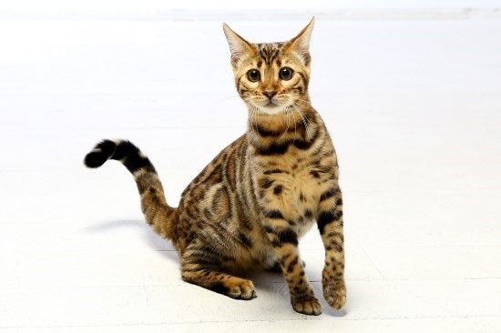
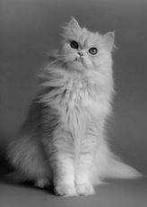
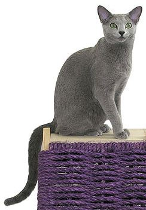
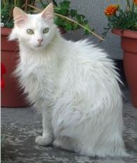
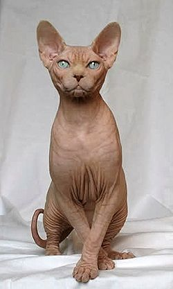
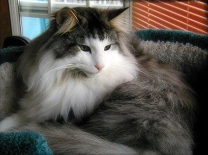
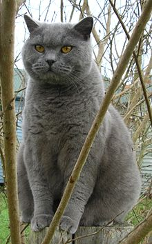

벵갈
고양이의 한 품종. 인도의 지명 벵골에서 유래하였지만 고양이 품종 이름으로 부를 땐 일반적으로 벵갈이라고 한다. 1970년대 미국에서 집고양이와 야생 삵의 교배로 탄생하였다. 품종명인 '벵갈'도 삵의 학명 "Prionailurus bengalensis"에서 유래. 고양이 분양샵에서도 상당히 고가에 거래되는 종으로, 최소 70만원 이상을 호가하는 경우가 많다. 상당한 고가의 외래고양이에 속한다고 할 수 있으며 삵과의 교배로 나온 혼혈인만큼 상당한 야성을 지니고 있다. 벵갈은 활동성이 높다. 벵갈의 활동성이 높다는건 그만큼 주인이 오랫동안 같이 놀아주며 시간을 보내줘야 한다는 뜻이므로 섣불리 분양하지 않는 게 좋다. 분양받을 때 한층 더 고민할 필요가 있는 고양이 종류다. 그냥 비싸고 귀엽다고 덥석 집어갔다가 둘 다 불행해진다. 둘 혹은 그 이상이면 지들끼리 미친듯이 놀아대서 그나마 집사가 편해진다. 활동성이 높은 고양이가 활동성을 살리지 못하고 쭈그려 지내면 보통고양이보다 정신건강이 더 쉽게 피폐해지기 때문에 신경써줘야하는 부분이다.그러므로 벵갈은 자신이 집에서 충분한 시간을 보낼 수 있으며 발톱에 벽지가 좀 망하는 걸 감수할 수 있는 집사만이 분양해야 할 것이다. 자기자신이 사무와 업무 때문에 너무 바빠서 집에 자주 있을 수 없다면 서로에게 좋지 않다. 털 무늬는 스팟(점박이), 로젯(표범 무늬), 마블 등의 타입이 있다. 스폿 타입은 토종 고양이 중에도 비슷한 무늬를 가진 것이 있으나, 명백한 차이가 존재한다. 기본적으로 벵갈은 호랑이 모양의 전신수트를 몸 전체 발끝까지 깔끔하게 입은 유전자를 가져서 다리의 양말처럼 신은 하얀 색깔의 무늬 부분이 없다. 또한 턱 밑에 무늬가 없으며, 배에 동그란 점(스팟)이 많이 있다. 육구 색깔이 검다는 점도 특징. 피모의 색은 브라운/실버로 분류된다. 육구는 검은색이다. 털이 짧기 때문에 모기에 잘 물릴 수 있으므로 심장사상충에 대비해 접종을 잘 해두는 편이 좋다. 벵갈 고양이의 일부에서 피모의 끝부분이 아름답고 투명하게 빛나는 글리터 현상이 발견되는데, 열성으로 유전되는 글리터 유전자의 발현으로 추정되나 아직 이 유전자의 실체는 밝혀지지 않았다.
페르시안
18세기 초 유럽에 처음 전해졌는데 확실한 기원이 알려져 있지 않다. 16세기 아시아에서 페르시아에 터키의 앙카라에서 온 장모종 고양이가 전해졌다는 기록이 남아있긴 하지만 구마인 선조라는 설이 있다. 이란의 옛 나라인 페르시아 제국의 상형문자에 나타난 것에 의하면 사막을 이동하며 무역을 하던 캐러밴들이 무역상품에 긴 털을 가진 고양이가 포함되어 있었고 고양이의 기원지에 따라 이름을 ‘페르시안’이라 불렀다. 이 상형문자에 나온 고양이가 현재의 페르시아고양이의 선조라면 기원은 B.C 1524년보다 훨씬 이전의 일일 것으로 추정된다. 18세기 유럽에 전해진 이후 1899년 영국에서 고양이쇼에 등장하였고, 19세기 말 미국으로 전해졌다. 긴 털을 가진 장모종의 대표적인 품종으로 털이 가늘고 길고 풍성하다. 털에서는 부드러운 감촉과 윤기가 나는데 목과 가슴에 장식털이 많다. 털의 색깔과 무늬의 모양에 따라 페르시아고양이의 종류를 구분하는데 매우 다양하다. 털이 길어 커 보이지만 실제로 체형은 중간 정도이며 튼튼하다. 다리는 굵고 짧은 편이며 꼬리 역시 굵고 짧지만 털이 매우 길고 풍성하게 나 있다. 얼굴은 다른 품종과는 다르게 넓고 둥글며 뺨은 볼록하다. 두 눈 사이의 간격은 멀고 눈 모양은 둥글고 크다. 코는 폭이 넓고 짧은데 일부 페르시아고양이는 코가 위로 들려있는 들창코 모양인 경우도 있다. 페르시안 친칠라라는 페르시안에서 갈라져 나온 품종이 있다. 온화한 성격을 지니고 있으며 비교적 조용하다. 자묘기때 혼자 있으면 사회성이 떨어진다. 영리하여 주인이 하는 행동을 시도하려고 하는 경향이 있다.
러시안 블루
확실한 기원은 아니지만, 북부 러시아의 아칸젤 섬에서 유래하였다고 알려져 있다. 원래는 아칸젤 블루 (Archangel Blue) 혹은 포린 블루 (Foreign Blue)로 알려졌었고, 1860년대에 선원들에 의해 영국과 북유럽으로 전해졌다고 전해온다. 러시아 왕가의 황실 고양이의 후손이었고, 빅토리아 여왕의 애묘였다고 하는데, 그 때문에 1875년 영국의 크리스탈 궁에서 아칸젤 고양이로 소개되었다. 가장 큰 외형적 특징은 탄탄하고 날렵한 몸을 짧은 은빛을 띤 푸른색의 털이 촘촘히 덮고 있는 것이다. 매끈거리는 털은 끝 부분으로 갈수록 은빛을 띤다. 무늬는 가지고 있지 않다. 머리는 V자 형이며 이마가 평평하고 목이 길고 가늘다. 짙은 초록색 눈은 둥그스름하며 눈 색깔이 두 번 바뀌는 것으로 유명하다. 처음 태어났을 때 가지고 있던 짙은 청회색 눈이 생후 2개월령쯤 되어 노란색으로 바뀌고, 생후 5~6개월령 전후로 다시 한번 초록색으로 바뀐다. 귀는 크고 뾰족하며 밑동이 넓다. 꼬리는 끝 부분으로 갈수록 가늘다. 매우 조용하고 온순한 성격이지만 사냥본능이 일어나면 잡히는것 모두를 문다. 거희 울지 않는다 하지만 러시안블루들 중자주 우는 경우도 있다(사료를 울때마다 줄는 식 으로 교육 시키면 자부 운다)울어도 그 소리가 작아 잘 들리지 않는다. 애교가 많으며 주인의 감정에 민감하게 반응한다. 주인이나 가족에게 애정이 깊으나 낯선 사람은 매우 경계하며 낯을 많이 가린다.
터키시 앙고라
신16세기 터키 앙카라에서 프랑스로 전해진 터키시 앙고라 고양이는 귀족들에게 큰 인기를 얻었다. 그 중 리슐리외 추기경은 고양이를 무척 아낀 것으로 유명하다. 그는 신비한 오드아이 눈빛과 아름다운 하얀 털을 가진 터키쉬 앙고라의 모습에 매료 되어 더욱 특별하게 아꼈다고 한다. 터키시 앙고라는 흰 고양이로 유명하다. 다른 색도 존재하지만 흰 색이 가장 유명하여 일반적으로 흰 고양이하면 터키시 앙고라를 떠올리기 마련이다. 털이 긴 장모종이며 체형은 늘씬한 편이다. 얼굴은 뾰족하고 귀는 크고 밑이 넓으며, 서로 붙어있다. 눈은 호두모양인데 위쪽으로 약간 기울었고, 오드아이를 가지고 태어날 수 있는데 이 중 일부는 귀가 들리지 않는 경우도 있다. 눈의 색깔은 노랑에서 초록, 파랑까지 매우 다양하다. 고양이 중 제일 영리하고 눈치도 빠르다. 성격은 상냥하고 정이 많아 충성심이 강하다. 활달하고 성미가 급한 편이며, 장난을 좋아하고 재롱을 잘 부린다.
스핑크스
스핑크스 고양이는 보통 두 종류로 나뉘는데, 캐나다가 고향인 캐너디언 스핑크스 와 러시아, 북유럽 등지의 돈 스핑크스(돈스코이)라는 종류가 있다. 넓은 의미로 스핑크스 고양이는 털이 없는, 즉 무모 종의 고양이로 분류되는데, 이런 무모종의 고양이는 스핑크스 이외에도 데본렉스 와 코호나 라는 고양이가 대표적으로 꼽힌다.하지만 "털이 없다." 라는 기준만 놓고 보면 좀 모호한 부분이 있는것이, 캐너디언 스핑크스는 완전히 털이 없는 무모가 아니라 얼핏 보아서는 털이 없는 것처럼 보이지만 실제로 자세히 들여다보면 몸 전체에 마치 복숭아처럼 0.5mm 이하의 아주 잔 솜털이 촘촘히 나 있다. 또한 몸의 일부분 예컨데 보통은 얼굴의 콧등 주위와 손, 발의 말단 부분, 꼬리부분 등에는 그냥 눈으로 보아도 인식이 될 정도로 0.5~2mm 정도의 잔털이 보이는 경우도 있다.그러나 다른 품종의 고양이와는 비교할 수 없을 정도로 눈에 보이는 털이 없기 때문에 보통은 무모로 인식하기 쉽고, 실제로 털 빠짐도 거의 없는 편이다. 스핑크스는 중형의 고양이로서 세미포린 체형이다. 세미포린 형의 고양이는 다소 작지만 근육이 발달되고 운동신경이 좋아 보이는 체형으로서 아비시니안 고양이가 대표적이다. 움직임이 부드럽고 시원시원해서 고양이의 민첩함이 잘 드러나는 체형이다. 비만이 아닌 한 보통은 2.5~5kg 정도의 체중을 가진다. 스핑크스의 얼굴은 큰 귀 때문에 길이에 비해 폭이 넓어 보이는 편이다. 윤곽은 부드럽고 광대뼈가 튀어나와 있다. 주둥이는 강하고 둥글며 수염자리에 브레이크가 있으나, 수염이 없는 아이도 있다. 머리에 비해 엄청나게 커 보이는 귀는 위로 똑바로 솟아 있으며, 얼굴은 정면에서 바라보았을 때 위가 넓은 역삼각형의 모양이다. 특히 이마에 주름이 잡혀있어 뭔가 걱정이 많은 듯한 특유의 노인네 같은 표정이 된다. 골격의 뼈가 가늘지만 연약하진 않으며 근육이 잘 발달되어 있다. 주름진 피부는 고운 솜털로 덮여 있으며 주둥이, 귀 뒤와 꼬리에 짤막한 털이 약간씩 나 있기도 하다. 특히 머리와 몸통에 주름이 많고 피부 색소가 있는 데다가, 솜털이기 때문에 몸의 피부색이 아주 뚜렷하게 보인다. 널찍한 가슴과 배 부분은 오크통에 가까운 형태로 둥글고 볼록해 보이지만 비만으로 보일 정도는 아니며, 발가락이 길고 다른 품종에 비해 발바닥 살이 두텁다. 스핑크스 고양이의 대표적인 성격이 사람과의 친화력 이다. 이 종은 다른 종들처럼 사람과 일정한 거리를 두는 예가 드물 정도로 사람을 좋아하며 잘 따른다. 호기심이 많아 이곳 저곳 기웃 거리기를 잘 하는 것은 물론, 사람의 손끝이나 몸 위 등에서 장난하면서 사람을 친구삼아 놀이를 서슴지 않는다. 상냥하고 민첩하며, 특히 다른 고양이에 비해 사람의 말귀를 알아듣는 능력이 좋아서 주인의 기분이나 상황에 따라 눈치있게 움직이는 머리 좋은 고양이이다. 때문에 어렸을 때부터 키우면 흔히 말하는 “개냥이”, “이불냥이”가 될 소질이 제일 많은 종이기도 하다.
노르웨이 숲
노르웨이숲(Norwegian forest cat)은 고양이의 한 품종으로 애묘인들 사이에서는 "놀숲" 이라 줄여서 부르기도 한다. 노르웨이의 숲에서 자연발생했고 1970년대 말 순종 고양이로 인정 받았다. 자연발생한 품종인 만큼 무늬는 코리안 숏헤어와 유사하며 지능이 높고 튼튼하다. 장모종이며 털이 풍성하다. 수컷 사자처럼 목과 가슴에 털이 더욱 크고 아름답게 난다. 꼬리에도 털이 풍성하여 꼬리가 너구리처럼 매우 커보인다. 장모종임에도 불구하고 털이 다른 종보다 적게 빠진다. 머리가 길고 콧등이 길다. 양쪽 눈과 코를 이으면 정삼각형에 가깝게 되는 것도 특징. 눈은 날카롭게 살짝 치켜 올라간 아몬드 형태이며 색상과 무늬는 매우 다양하다. 귀도 크고 아름답다. 높이도 높고 넓이도 넓으며 귀 끝이 날카로운 형태를 띄고 있다. 고양이 중에서도 가장 외모가 아름다운 고양이라는 평이 자자하며, 귀부인 같은 우아함이 종족 특성인 고양이다. 평균 수명은 14~16년이다. 대체로 건강한 편이지만 드물게 유전적으로 치명적인 질환(Glycogen Storage Disease Type IV)이 있다고 한다. 이는 DNA 검사를 통해 발견할 수 있기 때문에 애묘단체에서는 이 종의 고양이를 키우기 전에 꼭 검사할 것을 추천하고 있다. 앞서 언급했듯 드문 경우이기 때문에 너무 큰 걱정은 하지 않아도 될 듯하다.
브리티시 쇼트헤어
생후 3~5년까지 자라는데, 다 자라면, 수컷의 경우 체중이 4~8kg정도 된다. 일반적으로 암컷보다 수컷이 더 크다. 체형은 세미코비타입에 가깝고, 크고 둥그런 머리를 가지고 있으며, 귀는 머리에 비해 크지 않아야 한다. 눈은 크고 둥글며 볼살이 있어서 심술맞아 보이는 인상을 가지고 있지만, '이상한 나라의 앨리스'에 나오는 체셔 고양이처럼 부드러운 미소를 가지고 있다. 몸은 단단하며 뼈가 굵다. 짧고 굵은 목을 가지고 있어야 한다. 다리도 역시 굵고 짧은 편이며, 꼬리는 끝이 둥글고 몸체의 3분의 2정도의 길이이다. 털은 짧고 조밀하게 나 있고 뻣뻣한 편이다. 한편 색은 아주 다양한데, 가장 많은 색은 블루이다. 눈색은 털색과 관련이 있다. 조심스럽고 순한 성격으로, 조용하며 인내심이 강하다. 마치 영국신사처럼 강아지와 같은 다른 동물들을 먼저 배려하며 서로 평화롭게 지낸다. 크고 둥근 눈을 통해 끊임없이 의사표현을 한다. 한편 덩치가 큰 편이기 때문에 사람의 무릎에 앉아있는 무릎고양이라기 보다는, 곁에 머물며 여유를 즐기는 것을 좋아한다.
